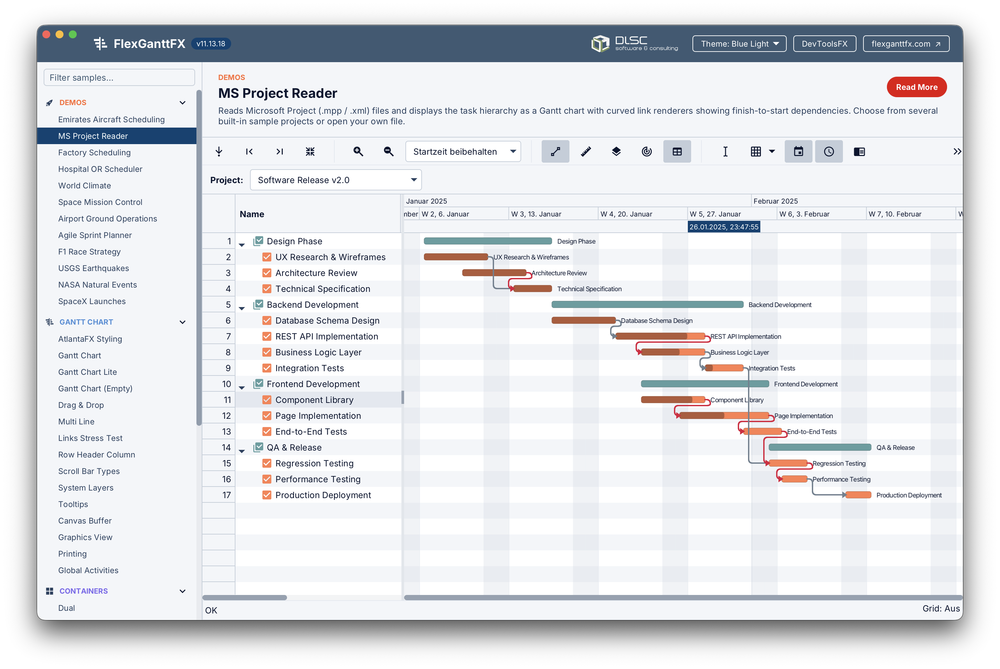
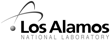

FlexGanttFX ist das führende Gantt-Diagramm-Framework für JavaFX — leistungsstark, vollständig anpassbar und auf Desktop, Web und Mobilgeräten einsetzbar. Emirates, NASA, Boeing und Hunderte weitere setzen darauf.
FlexGanttFX ist ein domänenunabhängiges Framework, das alles von der Projektplanung bis zur industriellen Einsatzplanung im Enterprise-Maßstab abbilden kann.
Canvas-basiertes Rendering mit Buffer-Architektur verarbeitet Zehntausende Aktivitäten mit 60 fps — ohne Kompromisse durch Virtualisierung.
Austauschbare Renderer, CSS-Styling, ein Layer-System und eine umfassende API ermöglichen es Ihnen, jedes visuelle Detail an Ihre Domäne und Marke anzupassen.
ChronoUnit- und SimpleUnit-Timelines unterstützen Zeiträume von Millisekunden bis Jahrzehnten mit konfigurierbaren mehrzeiligen Datelines, Gitternetzlinien und Zoomstufen.
Dual-, Quad- und Multi-Chart-Container mit synchronisiertem Scrollen und Zoomen für komplexe Ansichten mit mehreren Ressourcen.
Modellieren und visualisieren Sie Abhängigkeiten zwischen Aktivitäten mit anpassbaren Finish-to-Start- und anderen Link-Typen, gerendert mit gebogenen oder geraden Pfeilen.
Stellen Sie dieselbe Codebasis per JavaFX auf dem Desktop, per JPro im Browser oder per GraalVM + Gluon nativ auf iOS und Android bereit.
Von professioneller Beratung bis zu ausführlicher Dokumentation stellt die DLSC GmbH alles bereit, was Sie für den erfolgreichen Einsatz von FlexGanttFX benötigen.
FlexGanttFX ist komplex, wird aber von der DLSC GmbH unterstützt. Wir helfen Ihnen mit Architektur-Reviews, der Entwicklung individueller Renderer und Performance-Tuning schnell beim Einstieg.
DLSC.com besuchenHäufige Fragen zu Lizenzierung, Unterstützung von Java-Versionen, Web-Deployment und technischen Themen — knapp beantwortet, damit Sie schnell weiterkommen.
FAQs anzeigenDas ausführliche Entwicklerhandbuch behandelt Installation, Tutorial, alle Controls, die Modellschicht, Styling und Logging — durchgehend mit Codebeispielen.
Dokumentation lesenDiese Demos zeigen einige der vielen Funktionen, die direkt in FlexGanttFX integriert sind. Starten Sie sie direkt in Ihrem Browser.

Eine umfassende Demo, die den gesamten Funktionsumfang und die Möglichkeiten von FlexGanttFX zeigt. Testen Sie alle Controls, Layouts und Anpassungsoptionen direkt in Ihrem Browser.
Demo startenSehen Sie, wo und wie FlexGanttFX weltweit in Produktionsumgebungen eingesetzt wird.
FlexGanttFX wird aktiv gepflegt. Hier finden Sie die neuesten Releases. Die vollständigen Versionshinweise enthalten alle Details.
Die häufigsten Fragen zu FlexGanttFX. Keine passende Antwort gefunden? Kontaktieren Sie uns.
FlexGanttFX und seine Vorgängerprodukte werden in Hunderten Anwendungen eingesetzt. Das sagen Kunden darüber.
FlexGantt vergrößert den Abstand zwischen uns und unseren Wettbewerbern. Andere Standardwerkzeuge in diesem Geschäftsbereich sind meilenweit von FlexGantt entfernt. Die gut durchdachte Architektur gibt Ihnen die Möglichkeit, jeden Pixel dieser Komponente zu kontrollieren.
Bei der Evaluierung der FlexGantt-Bibliothek waren wir sofort sehr beeindruckt, weil sie unseren wichtigsten Erwartungen und Anforderungen zu entsprechen schien. Ihre Architektur mit Design Patterns sowie der kontinuierliche und reaktive Support machten sie zu unserer klaren Wahl.
Ich habe viel Zeit damit verbracht, Gantt-Diagramm-Pakete zu evaluieren, und sie alle verblassten im Vergleich zu FlexGantts Funktionsumfang, Flexibilität und unkomplizierter Lizenzierung. Ich würde es für jede Java-basierte Scheduling-Anwendung sehr empfehlen.
FlexGantt hat uns mit seinem großen Funktionsumfang, den Anpassungsmöglichkeiten, der Performance, Internationalisierung, Dokumentation und den Beispielen überzeugt. Unserer Meinung nach ist FlexGantt die beste Bibliothek für unsere Anforderungen.
FlexGantt steht für mich ganz klar mit Abstand über allem anderen, das wir uns angesehen haben. Die Arbeit mit FlexGantt war sehr angenehm. Wir können uns glücklich schätzen, ein so wunderbares Produkt gefunden zu haben.
Der große Funktionsumfang, die hohe Performance und die hervorragenden Visualisierungsmöglichkeiten von FlexGantt bringen unseren Produkten großen Mehrwert. Die gut durchdachte MVC-Architektur ermöglicht es uns, FlexGantt einfach in unsere Projekte zu integrieren und zu erweitern.
Von Luft- und Raumfahrt und Verteidigung bis Telekommunikation und Logistik — FlexGanttFX betreibt geschäftskritische Scheduling-Anwendungen.

Testen Sie FlexGanttFX 30 Tage kostenlos — unverbindlich. Kontaktieren Sie uns, und wir helfen Ihnen beim Start.